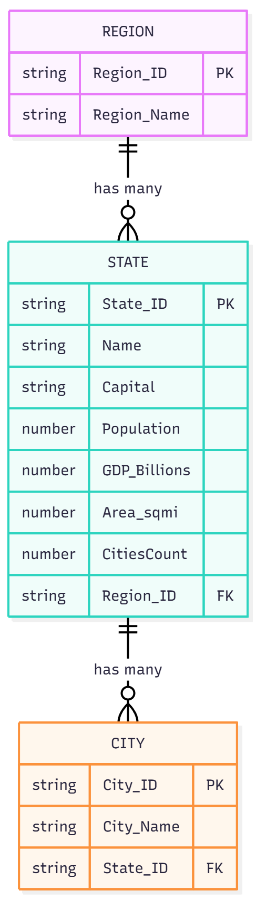

Mohamed Faisal Sindhi
Frontend, deployment, chatbot
Hongxu Yang
UI/UX, ERD & documentation
Jonathan James
Controllers, charts, data service
Data Model (ERD)

API Endpoints Used (Read-Only)
- World Bank GDP: https://api.worldbank.org/v2/country/USA/indicator/NY.GDP.MKTP.CD?format=json
- World Bank Population: https://api.worldbank.org/v2/country/USA/indicator/SP.POP.TOTL?format=json
Fetched dynamically for external insights; no data persistence.